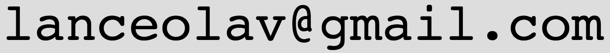

| Name | Lance Olav Eastgate |  |
|---|---|---|
| Born | 1975 | |
| Civil status | Married | |
| Citizenships | Norway, New Zealand | |
| Address | Kristiansand S, Norway | |
|  | ||
| Github | https://github.com/NorwegianKiwi |
| 2019 – |
Senior developer at Inkrement AS.
Front-end and back-end development mainly on campus.inkrement.no, a Norwegian educational platform based on the flipped classroom concept. ICT experience includes: MS SQL Server DB, C#, .NET Framework, Github, Windows. |
|---|---|
| 2014 – 2018 |
Senior developer at Inspera AS.
Since March 2015 I have been a full-time Inspera consultant for The Norwegian Directorate for Education and Training, working to improve the technical solution (front-end and back-end) of the computer-based tests administered to all primary and secondary schools (K–12) in Norway. Part of this work included developing a new authoring tool for the reading tests, and conducting the necessary user training. Other work includes improving the web interface of Inspera Assessment, a digital exam platform for higher education. ICT experience includes: Oracle DB, Java EE, WebLogic, React, Redux, Webpack, Sass, ES6, Github, TeamCity, Artifactory, Gradle, Bash/Linux. |
| 2013 – 2014 | Teacher in physics, math, and natural sciences at Oslo Handelsgymnasium high school. |
| 2005 – 2013 |
System analysis, project management, development, and programming at
RoomSketcher AS.
ICT experience includes:
C++, C#, MySql, PHP, 3D programming (Ogre3D,
Unity, Cg shading language, OpenGL,
Autodesk 3ds Max), and a computer science course at UiO, spring semester 2012:
INF3100 - Database systems (grade: A).
|
| 2004 – 2005 |
Research, programming, and data analysis at Intelligent Trading AS, Oslo.
ICT experience includes: Visual Basic (VBA/Excel).
|
| 2003 |
Physics teacher at Kaplan, Inc., Santa Barbara, CA, USA.
Taught physics for the Medical College Admissions Test (MCAT).
|
| 1999 | Teaching Assistant in physics at Cornell University, Ithaca, NY, USA. |
| 1996 – 1998 | Teaching Assistant in mathematics and physics at the University of Oslo. |
| 1991 – 1998 | Private tutor in mathematics and physics, at all levels from high school to university. |
| 1999 – 2004 |
Ph.D. in Computational Condensed Matter Physics at Cornell University, Ithaca, NY, USA.
Research: Theoretical and numerical modeling of amorphous solids; deformation and fracture. Dissertation: "Large-scale deformation and stress localizaton in amorphous solids." In part as visiting researcher at UCSB (University of California, Santa Barbara). Partially financed through a grant from the Norwegian Research Council (Norges forskningsråd). |
|---|---|
| 1997 – 1998 |
Cand. Scient. in Computational Condensed Matter Physics at the University of Oslo.
Thesis: "Wall Effects in Two-Dimensional Molecular Dynamics Simulations." Grade: 1.1 (written and oral). [Scale: 1–6 where 1.0 is best and 1–4 is pass.] |
| 1994 – 1996 |
Cand. Mag. at the Faculty of Natural Sciences, University of Oslo.
Average grade: 1.3. [Scale: 1–6 where 1.0 is best and 1–4 is pass.]
|
| 1992 – 1994 | International Baccalaureate at Berg Videregående Skole highschool, Oslo. |
| 2015 – |
Volunteer at Lær Kidsa Koding (Teach Kids Coding).
Main developer and coordinator for the new lesson pages. Have also volunteered at Kodeklubben Oslo, where I helped teach python to kids. |
|---|---|
| 2015 | Volunteer at Mattesenter (Math Center). |
| 2004 – 2012 | Part-time fitness-instructor at Studentidretten, University of Oslo. |
| 2005 – 2010 | Board member and chairman of the housing co-ownership committee for Sameiet Fredensborgveien 41B, Oslo. |
| 1995 – 1998 | Executive member of the Norwegian Association of Young Scientists. |
| 1995 – 1997 | Initiator and project leader for Space Camp Andøya at Andøya Rocket Range. |
- Norwegian and English: bilingual, speak and write fluently.
- French: basic (6 years at school).
- Italian: basic (evening classes weekly 2008–2011).
| 1997 | Attendance at the Stockholm International Youth Science Seminar (SIYSS) held in connection with the Nobel Prize Ceremonies. |
|---|---|
| 1994 | 4th place in the Norwegian Abel Mathematics Competition. |
| 1994 | Member of the Norwegian team at the 35th International Mathematical Olympiad (IMO), Hong Kong. |
| 1994 | 2nd place in the Norwegian Young Scientists Competition for the essay "Sound Reduction in a Tube by Destructive Interference". |
-
L. O. Eastgate, J. P. Sethna, M. Rauscher, T. Cretegny, C.-S. Chen, and C. R. Myers
"Fracture in mode I using a conserved phase-field model"
Phys. Rev. E 65, 036117 (2002)
-
L. O. Eastgate, J. S. Langer, and L. Pechenik
"Dynamics of Large-Scale Plastic Deformation and the Necking Instability in Amorphous Solids"
Phys. Rev. Lett. 90, 045506 (2003)
Available upon request.